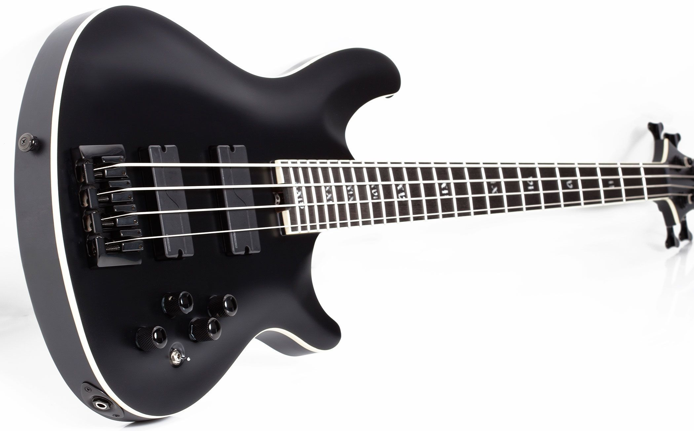

Любим гитары

"Электрогитары.
 Разновидность гитары с электромагнитными звукоснимателями, преобразующими колебания металлических струн в колебания электрического тока.
Разновидность гитары с электромагнитными звукоснимателями, преобразующими колебания металлических струн в колебания электрического тока.
Бас гитара.
Струнно-щипковый электрический музыкальный инструмент, предназначенный для игры в басовом диапазоне. На нём играют преимущественно пальцами, но допустима и игра медиатором. В сочетании с ударной установкой создаёт ритм-секцию. Помимо электрической бас-гитары существуют также акустический вариант бас-гитары, встречающийся в музыке гораздо реже, но он относится к другому классу инструментов, и их не следует путать.